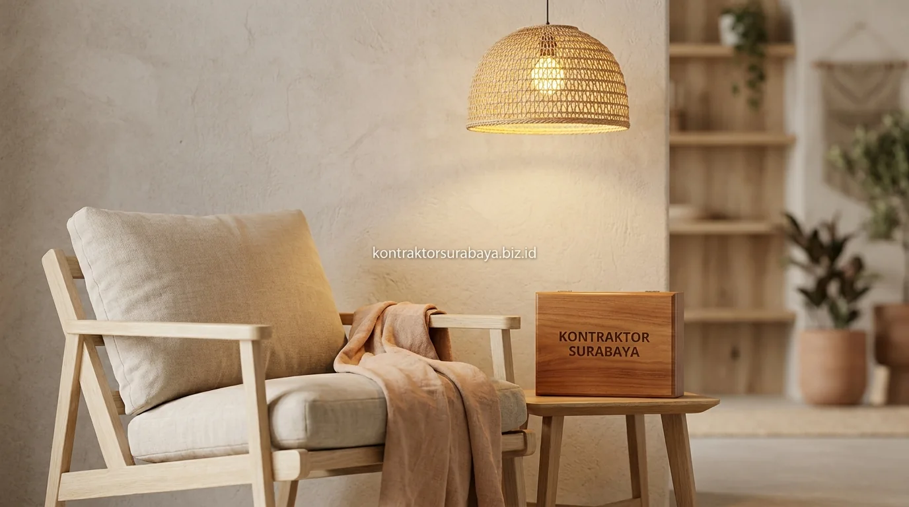

Banyak pemilik rumah modern di Surabaya mengeluhkan suasana ruangan yang terasa steril, kaku, dan dingin setelah menerapkan gaya minimalis serba putih. Untuk menghadirkan kehangatan dan rasa nyaman (coziness) tanpa meninggalkan kesan rapi dan lapang, konsep interior bergaya Japandi dengan sentuhan elemen kayu alami menjadi pilihan terbaik yang sangat digemari saat ini.
1. Konsep Japandi untuk Interior Rumah Tropis
Japandi memadukan kesederhanaan fungsional gaya Jepang dengan kehangatan material gaya Skandinavia, menghasilkan interior yang minimalis namun tidak terasa dingin.
Konsep ini sangat cocok diterapkan pada rumah tinggal di kawasan beriklim tropis seperti Surabaya karena tetap mengutamakan ruang terbuka dan sirkulasi udara khas desain minimalis, namun menambahkan sentuhan material alami dan warna hangat agar ruangan tidak terasa steril. Pendekatan ini banyak diminati klien yang menginginkan rumah minimalis modern tanpa kesan kaku dan monoton.
2. Material dan Warna yang Menghadirkan Kehangatan
Kayu jati belanda, warna earth tone, keramik bertekstur, dan kain linen adalah kombinasi yang paling sering dipakai untuk menghadirkan kehangatan pada interior minimalis.
- Kayu Jati Belanda & Sungkai: Penggunaan kayu pada kisi-kisi partisi, meja makan, rak gantung, atau panel dinding memberi tekstur alami yang hangat dan ramah disentuh.
- Palet Warna Earth Tone: Warna seperti krem, beige, cokelat muda, dan terracotta lembut menggantikan warna putih dingin yang monoton.
- Keramik & Lantai Bertekstur: Lantai bermotif kayu (SPC/vinyl) atau keramik bertekstur matte menambah kedalaman visual pada ruangan tanpa licin.
- Kain Linen & Katun: Penggunaan kain linen pada gorden tipis, sarung bantal, atau sofa menambah kesan lembut, sejuk, dan santai pada area keluarga.

3. Pencahayaan Hangat untuk Menghilangkan Kesan Kaku
Lampu dengan suhu warna hangat yang dipadukan tirai tipis untuk menyaring cahaya alami membantu ruangan terasa lebih nyaman dan tidak kaku.
Pencahayaan dengan suhu warna kekuningan (warm white sekitar 2700K - 3000K) memberi kesan lebih akrab dan menenangkan dibanding cahaya putih kebiruan yang cenderung terasa formal dan dingin. Pencahayaan aksen seperti hidden LED strip di balik backdrop TV, lampu gantung meja makan, dan lampu lantai di sudut ruang keluarga mampu mengubah suasana rumah secara dramatis saat malam hari.
"Interior rumah yang baik bukan hanya tentang furnitur yang mahal, melainkan bagaimana perpaduan tekstur kayu, pencahayaan lembut, dan proporsi ruang menciptakan rasa tenang bagi penghuninya setiap kali pulang ke rumah."
4. Bagaimana Menata Furnitur agar Ruangan Tetap Terasa Lapang?
Furnitur dengan kaki ramping dan bentuk rendah membantu ruangan tetap terasa lapang meski menggunakan banyak elemen kayu bertekstur.
Furnitur bergaya Japandi umumnya memiliki desain simpel dengan kaki ramping yang tidak menutupi pandangan ke lantai, sehingga ruangan tetap terasa terbuka meski jumlah furnitur cukup banyak. Penempatan furnitur juga diberi jarak yang proporsional dari dinding agar sirkulasi udara dan alur gerak penghuni di dalam rumah tetap optimal dan leluasa.
5. Elemen Alami untuk Melengkapi Nuansa Japandi
Tanaman indoor, anyaman rotan, elemen kayu solid, dan batu alam kecil adalah elemen alami yang paling sering ditambahkan untuk melengkapi nuansa Japandi.
- Tanaman Indoor Tropis: Tanaman seperti Monstera, Ficus Lyrata, atau Sansevieria menambah kesegaran visual tanpa memerlukan perawatan yang rumit.
- Anyaman Rotan Estetik: Sentuhan anyaman rotan pada kap lampu gantung atau keranjang penyimpanan estetik menambah tekstur kriya lokal yang khas.
- Elemen Kayu Solid: Meja konsol atau rak buku terbuka berbahan kayu solid memperkuat kesan hangat secara konsisten di seluruh ruangan.
- Aksen Batu Alam: Taburan batu koral putih atau hiasan batu alam pada pot tanaman menambah aksen natural tanpa mendominasi ruangan.
6. Kesalahan yang Membuat Konsep Japandi Terlihat Kurang Maksimal
Terlalu banyak ornamen, pencahayaan yang terlalu terang, kombinasi warna yang tidak konsisten, dan furnitur berukuran besar adalah kesalahan yang sering membuat konsep Japandi kurang maksimal.
- Terlalu Banyak Ornamen: Menambahkan terlalu banyak hiasan pernak-pernik justru menghilangkan prinsip minimalis dan ketenangan yang menjadi esensi utama konsep ini.
- Lampu Terlalu Silau & Putih: Pencahayaan lampu putih terang seperti ruang kantor menghilangkan suasana relaksasi hangat yang ingin dibangun.
- Palet Warna Tidak Selaras: Kombinasi warna yang tidak konsisten antar ruangan membuat transisi visual terasa terputus-putus dan kurang menyatu.
- Furnitur Terlalu Masif: Memilih sofa atau lemari berukuran jumbo pada ruangan terbatas membuat kesan lapang khas Japandi menjadi hilang seketika.
Setiap rumah memiliki kebutuhan ruang dan pencahayaan yang berbeda, sehingga penerapan konsep Japandi perlu disesuaikan dengan kondisi ruangan masing-masing klien. Lihat referensi visual lebih lengkap pada galeri proyek kami, atau pelajari cakupan layanan pada halaman jasa desain interior Surabaya.